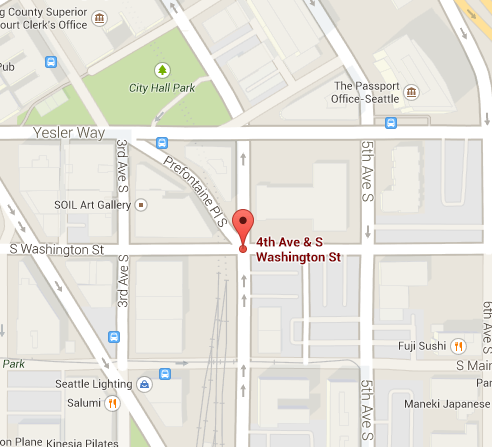
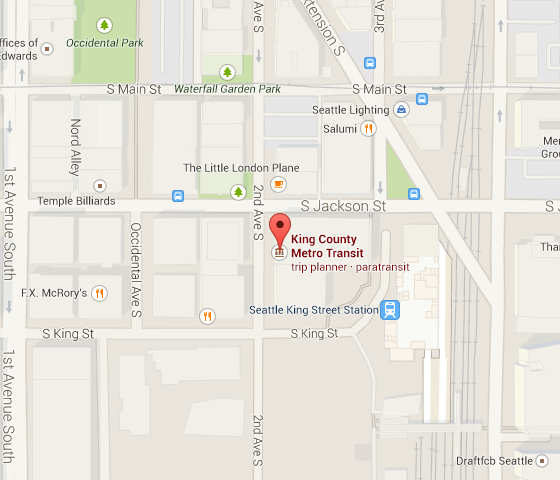
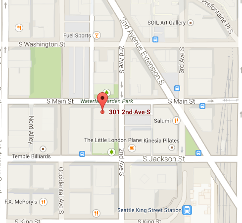

Call and Response
4th Ave S & S Washington St
Stuart Nakamura (2008)
Boulder, inlaid pavers and metal screen
-
A large boulder etched with abstract lines evoking water ripples forms the focal point of Call and Response, a sculptural installation on the plaza of Fire Station 10. Natural stone inlays set into the plaza are reminiscent of designs from Asian art and a nod to the station's location at the edge of the Chinatown-International District, home to Seattle's original Asian immigrants. The shapes of the inlays reflect the arc of a steel, laser-cut "water spray" sculpture, which depicts a firefighter wielding a hose.
Stuart Nakamura writes: "Call and Response pays tribute to the service and valor of the firefighters of Fire Station 10 with these three elements: a stainless steel arc of water containing the imagery of smoke and a firefighter; a rough-hewn, moss-covered granite boulder; and inlaid arcs of natural stone. Known in the Seattle Fire Department as 'The Rock,' Fire Station 10 continues the historic tradition of protecting the downtown and International District communities with its response to emergency calls."
-
Find It


Seattle Fallen Firefighters Memorial
Occidental Square
Hai Ying Wu (1995)
Cast bronze and granite sculpture. Seattle Bravest Charity
-
Although inspired by the four firefighters that died in the line of duty while fighting a warehouse fire in Seattle's Chinatown International District on January 5th, 1995, the Fallen Firefighter's Memorial is a respectful tribute to all thirty-one firefighters that have died in the line of duty since the department began in 1889.
Hai Ying Wu, an internationally recognized artist from the University of Washington School of Arts, worked with a team of firefighters to design the life-sized figures and also sculpted them.
Wu intentionally designed the figures with masked faces noting that they "..could be any of the thousands of firefighters who have donned the uniform of the Seattle Fire Department."
Surrounding the figures are slabs of granite intended to depict a collapsed building. Wu inscribed his own words into one of the slabs describing the memorial as "Represented realistically yet with exaggerated gestures to emphasize the intensity of the battle in which they are engaged."
-
Find It


Rain Forest Gates
201 S Jackson St.
Jean Whitesavage and Nick Lyle (1999)
Hand-forged and painted steel gates. King County Public Art Collection (4Culture)
-
The entire northwest corner of this mixed-use building is encompassed at street level with three sets of impressive, curved entry gates capped by a decorative cornice. Created out of forged steel and celebrating nature in all its glory, the imagery is taken from plants and animals found in the Pacific Northwest. Hundreds of pieces of ironwork are woven together to express the beauty and harmony of the web of life, alluding to the intricate dance of the ecosystem. Forged brackets link the theme to the super mullion structure of the building curtain wall and up to a decorative steel band of deer fern. The open steel frame at the building cornice is inset with forged alder leaves. The artists think of their sculpture as a kind of visual poetry; rather than simply imitating nature, it speaks the language of living things through the medium of steel.
-
Find It

Firefighter Silhouette
301 Second Ave S
Tom Askman (1987)
Bronze and zinc cut-out sculptures
-
Tom Askman created three eight-foot high silhouettes of firefighters, with bronze finish on zinc underlay, for Fire Station 10. The cutouts appear in second story corner niches on the outside of the building, and are back-lit at night.
In 1984, voters approved a bond issue that allowed for the renovation of 16 fire stations. Three artists, Tom Askman, Kenny Schneider and Ellen Ziegler, were chosen to work as a team on the project. The artists were asked to examine all of the fire stations and to select those they would like to work with. The artists selected five stations throughout the city: the old Fire Station 6 (no longer being used), Fire Station 13, Fire Station 17, Fire Station 41 and the old Fire Station 10 (now the Fire Station Headquarters).
-
Find It
